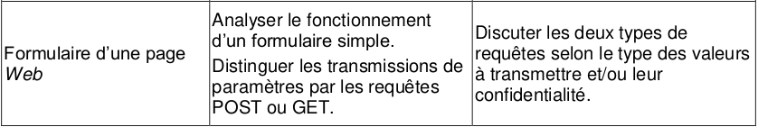
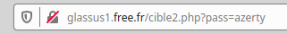

Chapitre 4: Requêtes GET, POST et formulaires⚓︎

Introduction⚓︎
Dans le cas de sites Web modernes et interactifs, les clients (c’est-à-dire les navigateurs Web) récupèrent non seulement un document HTML sur le serveur, mais lui envoient aussi souvent des informations comme :
- Le texte d’un terme de recherche que l’utilisateur a saisi dans le champ de recherche
- Le contenu d’un formulaire rempli
- La sélection des filtres dans une boutique en ligne
Pour la transmission de ces informations au serveur, le protocole HTTP prévoit différentes méthodes de requête. Les deux plus importantes sont GET et POST. Bien que les deux aboutissent au même résultat, elles sont fondamentalement différentes.
1. La méthode GET⚓︎
Considérons le formulaire suivant, inclus dans une page html ouverte dans le navigateur du client :
Formulaire
Le mot de passe est :
<form action="cible2.php" method="get">
<p>
<input type="password" name="pass" />
<input type="submit" value="Valider" />
</p>
</form>
Aperçu :

Explications :
- le fichier
cible2.phpest le fichier sur le serveur qui recevra les paramètres contenus dans le formulaire. - le paramètre sera nommé
passet sera de typepassword, ce qui signifie qu'on n'affichera pas les caractères tapés par l'utilisateur. On aurait pu aussi avoir un type :text: le texte s'affiche en clair (pour les login par ex)radio: pour une sélection (d'un seul élément)checkbox: pour une sélection (éventuellement multiple)
- un bouton comportant le label «Valider» déclenchera l'envoi (grâce au type particulier
submit) des paramètres (ici un seul, la variablepass) au serveur.
Test :⚓︎
- Rendez-vous sur la page http://glassus1.free.fr/ex_get.html et testez un mot de passe.
- Observez attentivement l'url de la page sur laquelle vous êtes arrivés. Que remarquez-vous ?
La méthode GET et la confidentialité :⚓︎
Les paramètres passés au serveur par la méthode GET sont transmis dans l'url de la requête. Ils sont donc lisibles en clair par n'importe qui.

Évidemment, c'est une méthode catastrophique pour la transmission des mots de passe. Par contre, c'est une méthode efficace pour accéder directement à une page particulière : ainsi l'url https://www.google.fr/search?q=la ciotat nous amènera directement au résultat de la recherche Google pour «la ciotat».
À retenir
- Avec la méthode GET, les données à envoyer au serveur sont écrites directement dans l’URL. Dans la fenêtre de votre navigateur, cela ressemble à ceci :
www.example.com/register.php?firstname=peter&name=miller&age=55&gender=male
- Toutes les informations saisies par l’utilisateur (les paramètres dits URL) sont transmises aussi librement que l’URL elle-même. Cela présente des avantages et des inconvénients.
Avantages⚓︎
- Les paramètres de l’URL peuvent être enregistrés avec l’adresse du site Web. Cela permet de mettre une requête de recherche en marque-page et de la récupérer plus tard.
- Si nécessaire, la page peut également être récupérée via l’historique de navigation.
- Cela est utile pour visualiser par exemple régulièrement une section de carte Google Maps ou pour enregistrer des pages Web contenant certains paramètres de filtrage et de tri.
Inconvénients⚓︎
- Le principal inconvénient de la méthode GET est l’absence de protection des données. Les paramètres URL envoyés sont non seulement visibles par tous dans la barre d’adresse du navigateur, mais sont également stockés sans chiffrement dans l’historique du navigateur, dans le cache et dans le fichier log du serveur.
- Un deuxième inconvénient est sa capacité limitée : suivant le serveur Web et le navigateur, l’URL ne peut pas contenir plus de 2048 caractères. De plus, les paramètres des URL ne peuvent contenir que des caractères ASCII (lettres, chiffres, caractères spéciaux, etc.), et non des données binaires telles que des fichiers audio ou des images.
2. La méthode POST⚓︎
Dans notre code de formulaire du 1.1, modifions l'attribut method, auparavant égal à "get". Passons-le égal à "post" :
Le mot de passe est :
<form action="cible2.php" method="post">
<p>
<input type="password" name="pass" />
<input type="submit" value="Valider" />
</p>
</form>
Test :⚓︎
- Rendez-vous sur la page http://glassus1.free.fr/ex_post.html et testez un mot de passe.
- Observez attentivement l'url de la page sur laquelle vous êtes arrivés. Que remarquez-vous ?
La méthode POST et la confidentialité :⚓︎
Les paramètres passés au serveur par la méthode POST ne sont pas visibles dans l'url de la requête. Ils sont contenus dans le corps de la requête, mais non affichés sur le navigateur.

Donc, la transmission du mot de passe est bien sécurisée par la méthode POST ?
 Pas du tout ! Si le protocole de transmission est du
Pas du tout ! Si le protocole de transmission est du http et non pas du https, n'importe qui interceptant le trafic peut lire le contenu de la requête et y trouver le mot de passe en clair. Par exemple, voici ce que nous révèle les outils de développeur du navigateur:

Le contenu de la variable "pass" est donc visible dans le contenu de la requête.
Le passage en https chiffre le contenu de la requête et empêche donc la simple lecture du mot de passe.
À retenir
- La méthode POST écrit les paramètres URL (Uniform Resource Locator) dans la requête HTTP pour le serveur. Les paramètres ne sont donc pas visibles pour les utilisateurs et la portée des requêtes POST est illimitée.
Avantages⚓︎
- Lorsqu’il s’agit de transmettre des données sensibles au serveur, par exemple un formulaire d’inscription avec nom d’utilisateur et mot de passe, la méthode POST permet de garder la confidentialité nécessaire.
- Les données ne sont pas mises en cache et n’apparaissent pas dans l’historique de navigation.
- La flexibilité est également de mise avec POST : non seulement des textes courts, mais aussi des données de toute taille et de tout type peuvent être transmis, comme des photos ou des vidéos.
Inconvénients⚓︎
- Si une page Web est mise à jour avec un formulaire dans le navigateur (par exemple, en utilisant le bouton « Précédent » / « Retour »), les données du formulaire doivent être de nouveau soumises. Vous avez certainement déjà vu des avertissements qui s’y réfèrent. Il existe un risque que les données soient envoyées plusieurs fois par inadvertance, ce qui peut déclencher des commandes en double par exemple. Toutefois, les programmes de boutiques en ligne les plus récents peuvent empêcher ces problèmes.
- Les données transmises par la méthode POST ne peuvent pas être sauvegardées sous forme de marque-page avec l’URL.
Synthèse⚓︎
| GET | POST | |
|---|---|---|
| Visibilité | Visible pour l’utilisateur dans le champ d’adresse | Invisible pour l’utilisateur |
| Marque-page et historique de navigation | Les paramètres de l’URL sont stockés en même temps que l’URL. | L’URL est enregistrée sans paramètres URL. |
| Cache et fichier log du serveur | Les paramètres de l’URL sont stockés sans chiffrement | Les paramètres de l’URL ne sont pas enregistrés automatiquement. |
| Comportement lors de l’actualisation du navigateur / Bouton « précédent » | Les paramètres de l’URL ne sont pas envoyés à nouveau. | Le navigateur avertit que les données du formulaire doivent être renvoyées. |
| Type de données | Caractères ASCII uniquement. | Caractères ASCII mais également données binaires. |
| Longueur des données | Limitée - longueur maximale de l’URL à 2048 caractères. | Illimitée. |
Une simple « règle de base » pour finir :⚓︎
- GET pour les paramètres d’un site Web que l'on consulte (filtres, tri, saisies de recherche, etc.). La base de données du serveur est consultée mais pas modifiée.
- POST pour la transmission d'informations et de données de la part de l’utilisateur. La base de données du serveur est modifiée.
Cette fenêtre est caractéristique de l'utilisation d'une méthode POST.